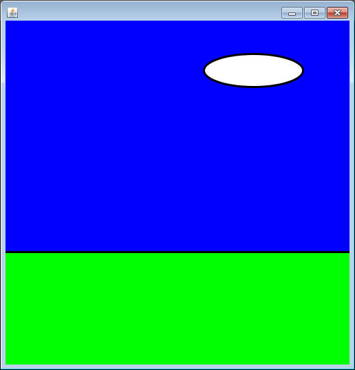
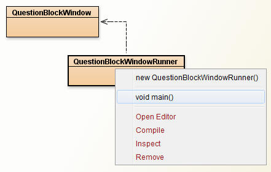
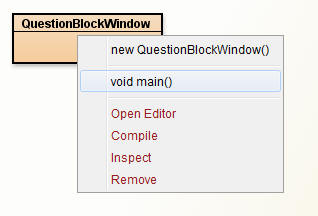
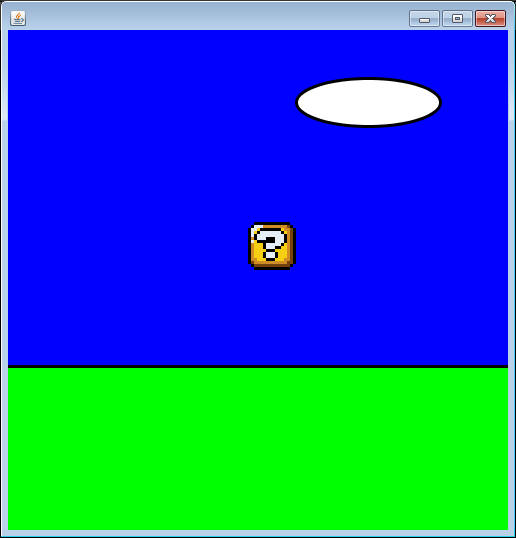

Enhancing SaccoObjects
Part 1: Self-Drawing Objects
Previously we've extended SaccoObject to create a window that showed a Square. But when we created two Squares, they appeared in different windows because every SaccoObject has it's own window assosciated with it. If we want our objects to be on the same window, then we need one SaccoObject to act as the window that asks the objects to paint themselves using its PaintBrush.
Copy the following class into your project. Notice that it does the three things that every SaccoObject needs:
1) import sacco.*;
2) extends SaccoObject
3) overrides the paintWindow method
import sacco.*;
public class QuestionBlockWindow extends SaccoObject
{
public QuestionBlockWindow()
{
}
public void paintWindow(PaintBrush brush)
{
//draw sky
brush.setColor("blue");
brush.fillRectangle(0,0,500,500);
//draw grass
brush.setColor("green");
brush.fillRectangle(0,336,500,200);
//draw border line
brush.setColor("black");
brush.setThickness(3);
brush.drawLine(0,336,500,336);
//draw cloud
brush.setColor("white");
brush.fillOval(288,48,144,48);
brush.setColor("black");
brush.drawOval(288,48,144,48);
}
}
|
Now set up the following runner, which constructs a new QuestionBlockWindow and calls its showWindow method:
public class QuestionBlockWindowRunner
{
public static void main()
{
QuestionBlockWindow myWindow = new QuestionBlockWindow();
myWindow.showWindow();
}
} |
Test it out, hopefully it looks like the beautiful landscape below:

Wait.... Why so many class files?
Now that the two classes are made, you may run your program by right clicking the QuestionBlockWindowRunner class and selecting the main method. At this point only a blank screen will pop up, but let's think about the Runner class.

We now know that static methods don't have anything to do with the instance fields or any other method in the same class. This means that it isn't actually important where the method is located.
Scary Proposition:
To save a little bit of time, you can put the main method inside the QuestionBlockWindow class. Since static methods are so independent, having the method here will not effect how the object works. In the end you'll only need the QuestionBlockWindow class, which now both defines a constructable object and has a method when will actually construct that object and do something with it.
import sacco.*;
public class QuestionBlockWindow extends SaccoObject
{
public QuestionBlockWindow()
{
}
public void paintWindow(PaintBrush brush)
{
//draw sky
brush.setColor("blue");
brush.fillRectangle(0,0,500,500);
//draw grass
brush.setColor("green");
brush.fillRectangle(0,336,500,200);
//draw border line
brush.setColor("black");
brush.setThickness(3);
brush.drawLine(0,336,500,336);
//draw cloud
brush.setColor("white");
brush.fillOval(288,48,144,48);
brush.setColor("black");
brush.drawOval(288,48,144,48);
}
public static void main()
{
QuestionBlockWindow myWindow = new QuestionBlockWindow();
myWindow.showWindow();
}
}
|
When thinking about how this class worksas an object, you simply pretend all of the static methods don't exist. From here on out, when told to make a runner you may put the static main method in another class or within the object class that you're working with.

Using a Self Painting Object:
The QuestionBlockWindow class is set up to draw a basic background which we're going to improve with some self drawing objects. In sacco.jar there is a QuestionBlock class, which has instance fields that keep track of an x, y, and an image to display. We want to display this QuestionBlock, so we'll need to incorporate it into our project.
1) Make it an instance field:
This object is one that we want to keep track of for the life of the Window, so
we'll declare it as an instance field.
private QuestionBlock myBlock;
2) Set it up in the constructor:
Go to the QuestionBlockWindow's constructor and use it to set up the instance
field that you just created. You can't set the x,y or scale using just the
constructor, so this is a multi-step process.
myBlock = new QuestionBlock();
myBlock.setX(240);
myBlock.setY(192);
myBlock.setScale(3);
Now we've got an instance field that has an x,y, and scale that we want, but when we run our program it still doesn't show up. That's because our paintWindow method hasn't been changed to draw the QuestionBlock object.
Read through the current paintWindow method; it uses PaintBrush's methods like fillRectangle and drawLine to get the background, but there is no drawQuestionBlock method. The answer lies in the QuestionBlock class. There is a paintSelf method that will accept a PaintBrush and draw the QuestionBlock using it.
The paintWindow method's strategy is now going to be the following:
- paint the background using the PaintBrush object
- hand the PaintBrush to the QuestionBlock so that it can draw itself on it.
This is how the images get combined.
Change your paintWindow method to be the following:
//draw sky brush.setColor("blue"); brush.fillRectangle(0,0,500,500); //draw grass brush.setColor("green"); brush.fillRectangle(0,336,500,200); //draw border line brush.setColor("black"); brush.setThickness(3); brush.drawLine(0,336,500,336); //draw cloud brush.setColor("white"); brush.fillOval(288,48,144,48); brush.setColor("black"); brush.drawOval(288,48,144,48); //have the block paint itself using the PaintBrush myBlock.paintSelf(brush);
The only difference is the the very last line, which hands off the PaintBrush to the QuestionBlock so that it can paint itself on top.
Now run the main method, hopefully you get the window
below:

Assignment 1:
-Add two more QuestionBlocks to the QuestionBlockWindow
class and attempt to recreate the following window. Hint: When the
scale is 3, the QuestionBlock has a width and height of 48.
-Add a StandingMario object in the same way.
Use the API to determine the
best way to construct it. Hint: Mario's x and y should be set to 144
and 240 with the scale set to 3.